Recovery
Approved application · approved logoEvery image below is an actual canonical PNG. Open an image for its full resolution. These are authored design scenes, not current-app browser captures.
Draft recovery
recovery-dialogActions and implementation pointers
× · Open document · About downloads · Retry save · Download full draft
apps/web/src/components/editor/save-status.tsxapps/web/src/components/editor/draft-recovery-actions.tsxapps/web/src/components/editor/document-draft.ts

SHA256 ea6c61700aa57f60200aa9ed1fa2cf07fb4fe9c064c709ee97c7336e7856dc71

SHA256 c9f13372ec546634c2e73f0a19ae909efc6628ff6af4c46eca0964e3331692d0

SHA256 70d4bb8029d84c3e26648edc5736ef2f580fa13ecc023da5b600bd3ad61a26a6

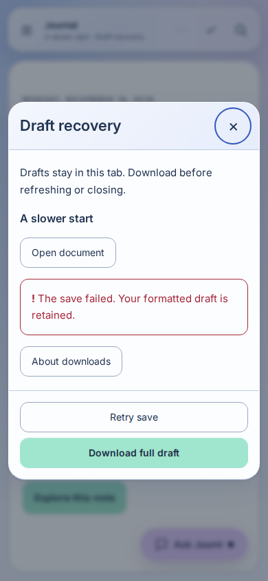
SHA256 c4e99351b3ce4e45699569e70c309711e43b012fa0ec3adce4f90851c49dbf94

SHA256 3e738c4b213a3a32d74534e977423ba89f4c2abcd800b1eda4542d8422f1ff36

SHA256 f731ff67a0880fad9d584e7a0ba498149d591a0dd1f9339a4ab733b3fb0630c7
Kept draft · read-only
kept-viewActions and implementation pointers
× · Hide kept draft · Download kept draft
apps/web/src/components/editor/save-status.tsxapps/web/src/components/editor/draft-recovery-actions.tsxapps/web/src/components/editor/document-draft.ts

SHA256 d60d8546806808aa4e13d71625dbc9809f4a47cba22878ef1b3ebc3e901221e6

SHA256 4f578e5db132b2e738efbd9bd8ea522165a69b49f1e669ca58e7a8278b370651

SHA256 af6d96a42b48b991de3978c8d633884cf50907f65f233fb420182625284c4ff7

SHA256 c275d5135429fcab1ff9b22a42cd4295a9112c16f5ff139a8be0ea1673493a02
Autosave on
status-autosaveActions and implementation pointers
× · Save details · Review drafts
apps/web/src/components/editor/save-status.tsxapps/web/src/components/editor/draft-recovery-actions.tsxapps/web/src/components/editor/document-draft.ts

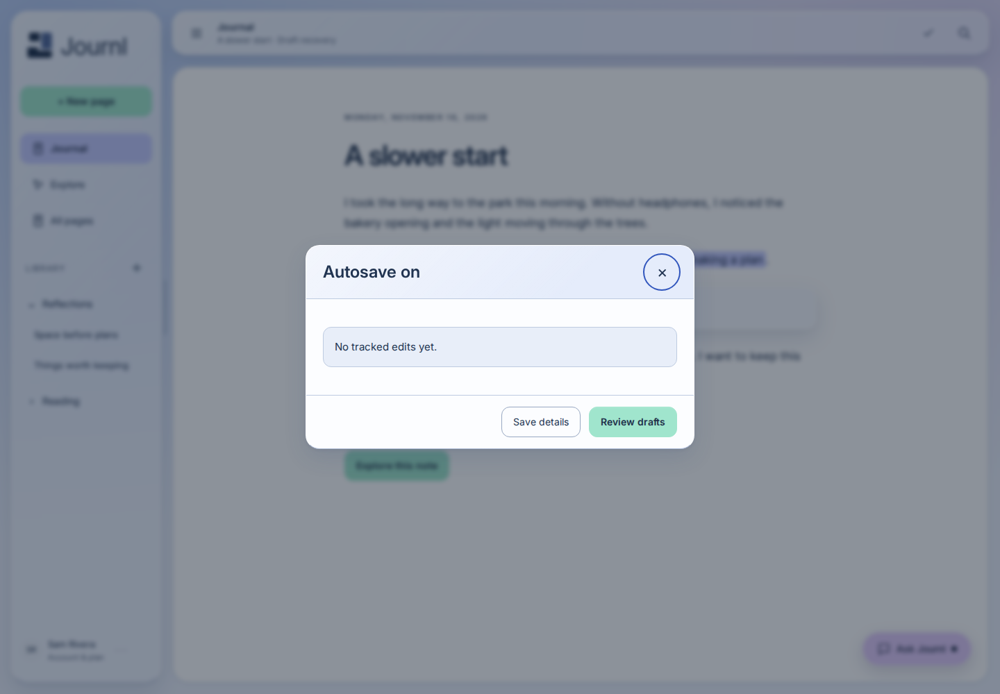
SHA256 7eeaaf8b8a4ef2623e4e3bfe8833ba77e21a635d7457cbb4e35f609a857a4e72

SHA256 309737cd4709c10f054d31cdbaf2fa8227f99e1355d73f1f1e07491e2fcfa733

SHA256 ac5c9cdc0740d5601902ff9a1d06540b11aa9692fb8b5380d576dc6639c6f8c1

SHA256 4067594104bb123ffba5a7d7ddbd69a5293ba7b2b480b9bafe87ed756515f237
Saved
status-savedActions and implementation pointers
× · Save details · Review drafts
apps/web/src/components/editor/save-status.tsxapps/web/src/components/editor/draft-recovery-actions.tsxapps/web/src/components/editor/document-draft.ts

SHA256 00a0cb1e611f02a8af07301e4137ed92b2acf55351bfc2b8bcaec95040e9edd8

SHA256 90f8fcb1593bb7242ac68fe1fe6301346f5be1caf63912cf9de1bd4808fb58b8

SHA256 64b7801fa9f7f20087d0d69fc9a8d5d8b29ced14b5430282002825c2a8a330d9

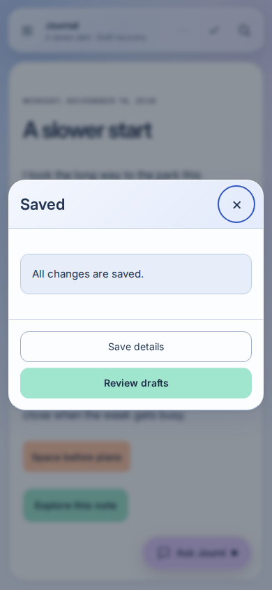
SHA256 47e52917140971d0885597a6d5eaa08faeab1ac397a2703ed603a5731ff12fe0
Saving…
status-savingActions and implementation pointers
× · Save details · Review drafts
apps/web/src/components/editor/save-status.tsxapps/web/src/components/editor/draft-recovery-actions.tsxapps/web/src/components/editor/document-draft.ts

SHA256 878fc52f3bcecf67ce9c91726076fc918a9a58f0cb4a17b19f9b249db0b626a2

SHA256 197a064c43ba621b87b586f9cbd46d85502849368bfcc05d26658d45862afa5b

SHA256 a788f7e58cb808f32aea3c1af24769b1cb4c85fbe0ef7a479a6d074b96c1eeec

SHA256 fd130262773d8029401cee642abe303bf2f7a6ec6ca7ca91bbf870c680e6a9e9
Offline
status-offlineActions and implementation pointers
× · Save details · Review drafts
apps/web/src/components/editor/save-status.tsxapps/web/src/components/editor/draft-recovery-actions.tsxapps/web/src/components/editor/document-draft.ts

SHA256 d8a574dc722c3abd25ba8e3f052e5c72e56b4292b669a5c4780683fd3ba04e6f

SHA256 5942289671d1f5e0bd5bf3070a5b87ea0898bb54f1fb125d86e11c9e455c2298

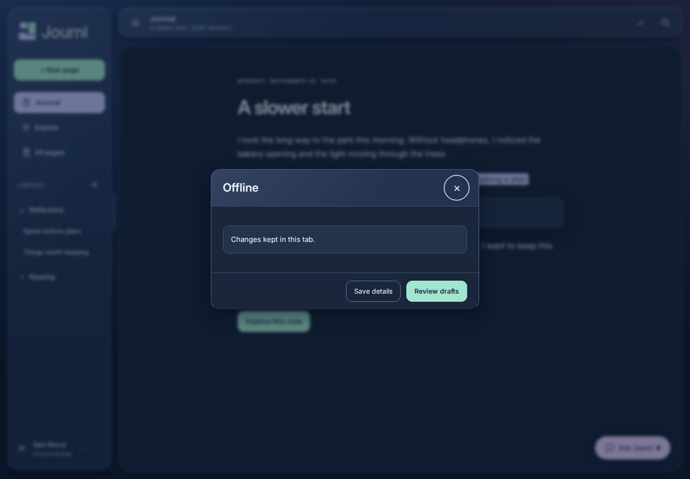
SHA256 ee59e5fc20d6d898d73e9883a45aad46cb75dd2d4d4a205aa93c4e1912fe86d0

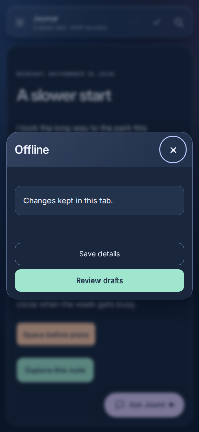
SHA256 96fc61c80ca1d6526b9f4534e7f1061171df4aa1a2dbef28018dc31b4a64014a
Couldn’t save
status-failedActions and implementation pointers
× · Save details · Review drafts
apps/web/src/components/editor/save-status.tsxapps/web/src/components/editor/draft-recovery-actions.tsxapps/web/src/components/editor/document-draft.ts

SHA256 e28f2381bf67923778ed05d2717a8a98caa1e48c9bd06754b2b942f2af93bdaf

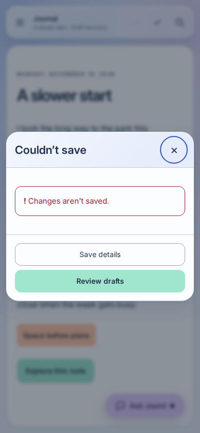
SHA256 101faff0159d8a02f0c52aad2858dbee77159edb56cb834dafa8eb42d27f7460

SHA256 8ad2c669168cb32e33123724f0da57b1a6bbfdc4d6b4cbd8fb6e99846d0c3bca

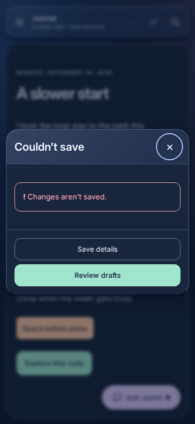
SHA256 a8877e8876e871cf578907aa53e9c6561375c0d270e3d7eebcd5be42502a1e04
2 drafts couldn’t save
status-multipleActions and implementation pointers
× · Save details · Review drafts
apps/web/src/components/editor/save-status.tsxapps/web/src/components/editor/draft-recovery-actions.tsxapps/web/src/components/editor/document-draft.ts

SHA256 30ead136079e46180355414aa8723932b264831e7ef9a29db3cd6b302c3f9a8b

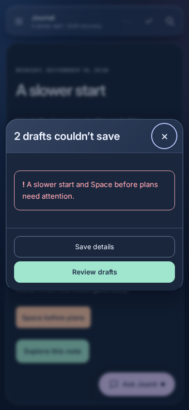
SHA256 2d5acf87c5c24e9f0c6266a008bea291f1ec88c05a39f78b8cf9357f0a12ffdd

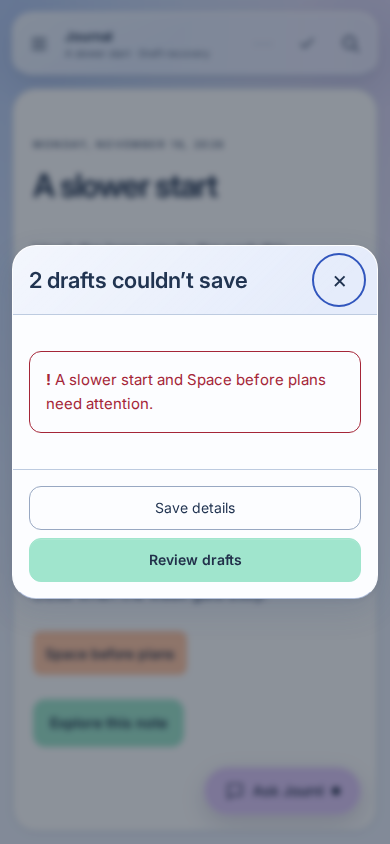
SHA256 c1ef39410ff852453ae02f119d2f2d1e06462ccf40847084236f50d947033211

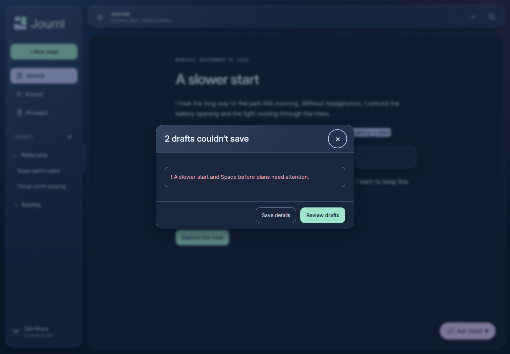
SHA256 0318396aef8c6b41c4707b3d4b0b26f4f77006cbf1f0c4fad72bff819c299c21
1 kept draft in this tab
status-keptActions and implementation pointers
× · Save details · Review drafts
apps/web/src/components/editor/save-status.tsxapps/web/src/components/editor/draft-recovery-actions.tsxapps/web/src/components/editor/document-draft.ts

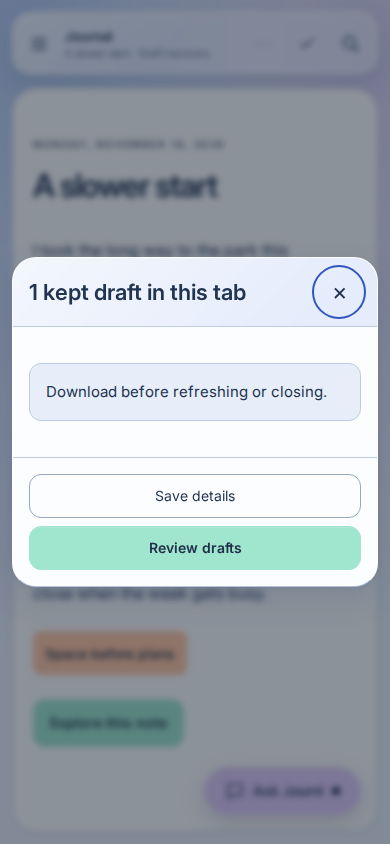
SHA256 14bd5cbc3b52eaa682848c4c728c08379d8768299f4037ffb39c6666ac4e9853

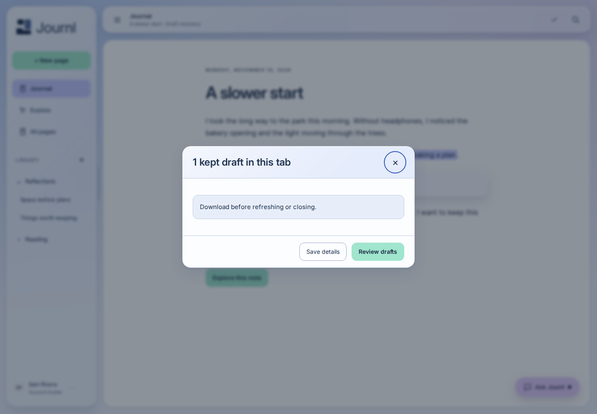
SHA256 2f5985a972fb0784b9487df4624c0a7d04f2bece8106e441d2b35e38054e81a4

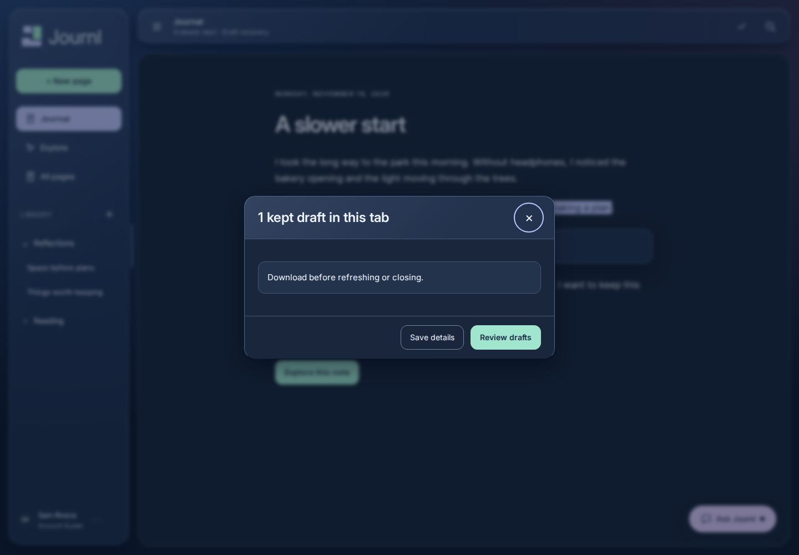
SHA256 c35c6fedf2f205e6f8b205f29ff29b3438981ebd7c36b40b7b0c96667355cb21

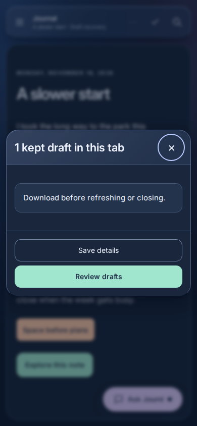
SHA256 3730ec8a0d4003ab77c3e1069157bd7e6bffc2d51dba378e04b44aba1cb72f76
Two versions need your choice
conflictActions and implementation pointers
× · Open document · Download full draft · Keep both and load saved
apps/web/src/components/editor/save-status.tsxapps/web/src/components/editor/draft-recovery-actions.tsxapps/web/src/components/editor/document-draft.ts

SHA256 9ee443ec7839b2b6a156ab5c6491f9c1d2f35a1fa4ad1dfbb8f79f67a0f4e59f

SHA256 48a85130ac8abb3c43fcdbe7ba2a22e8c01db2867a96c3fb9715fa112e045c3a

SHA256 8a35e4f7ecdd5d6b8e5d5038f23f93779baad915b7ac9dfb62222d9e934c0099

SHA256 68c3ab7668872df3f0a771dc17707759dc92bd4b7be9a48bdd2064dcac901301